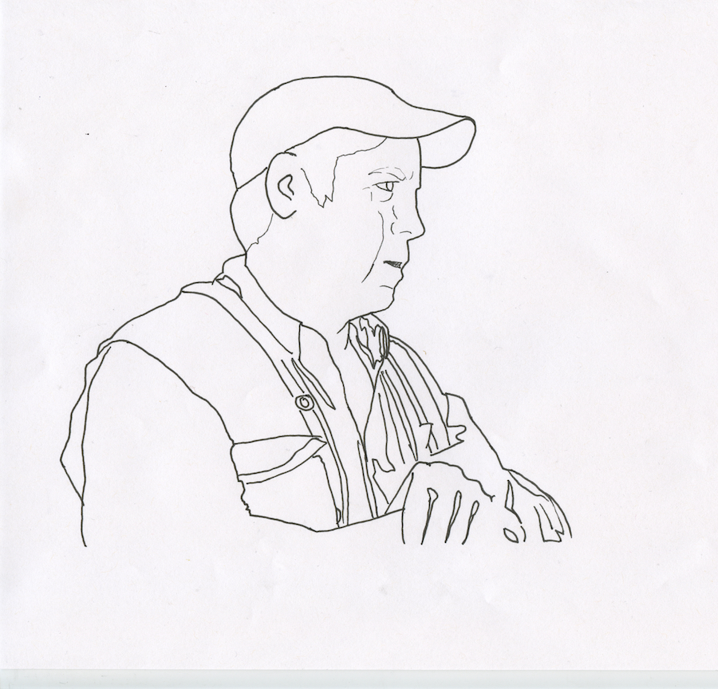
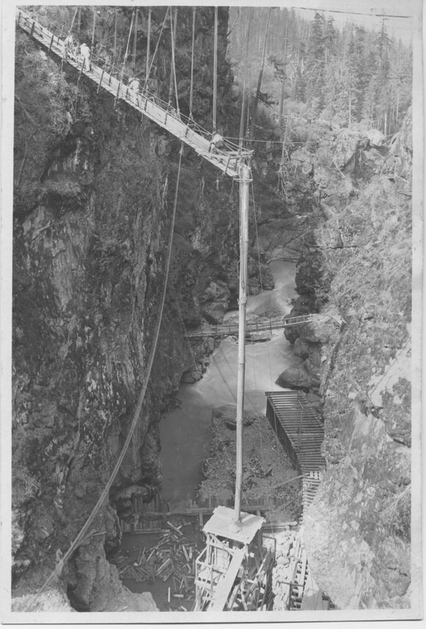
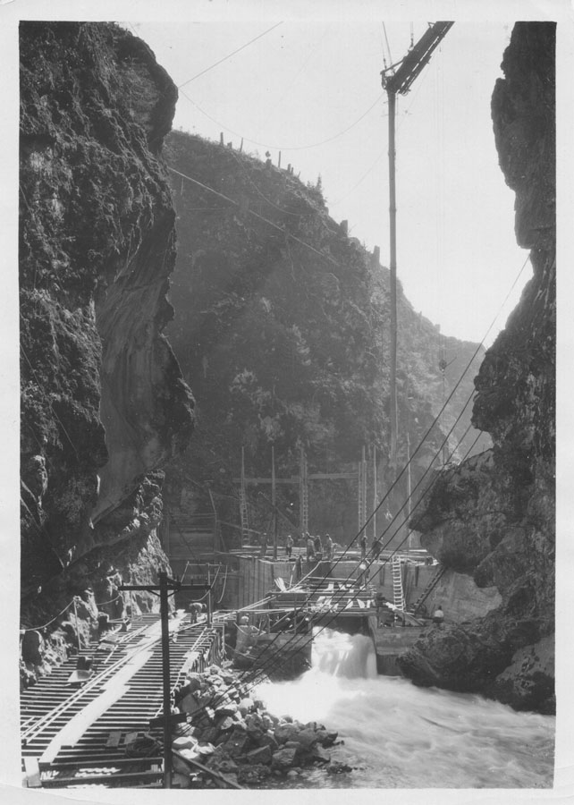
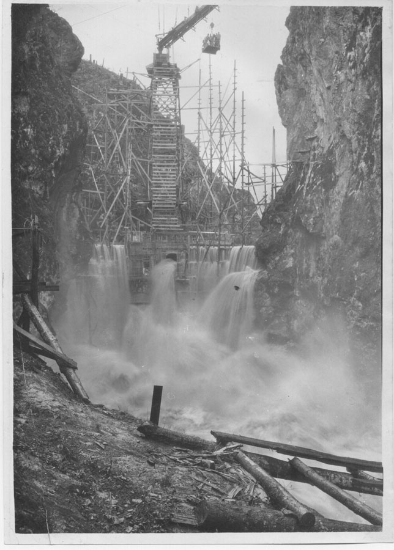
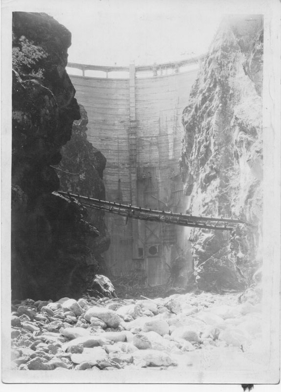
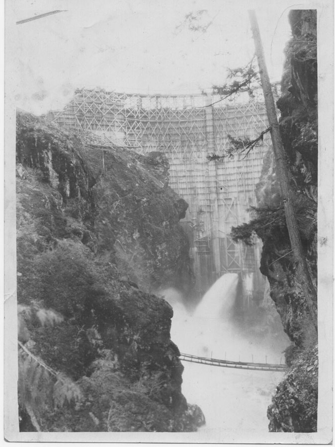

"My grandmother told me when I was a child, that the fish were so thick you could walk across them."
- Mel Elofson, Lower Elwha Klallam Tribe Fisheries

But when the Elwha Dam was built in 1910, that changed.
The Elwha Dam supplied power to Port Angeles, helping the area become a logging boomtown.
It was built five miles from the mouth of the river
and without a fish ladder.



For more than a century, salmon were blocked from swimming up the Elwha. Klallam lands flooded, and the landscape around the river changed changed drastically.
In 1986, the Klallam people teamed up with environmentalists to fight for dam removal. In 1992, the Federal Government ruled that the environmental costs of Elwha Dam outweighed its benefits.
Demolition of the Elwha Dam began 2011.
When the dam was removed, 250 million cubic feet of sediment was released. The new sediment widened the river and smoothed out the riverbed. With more water and a more consistent flow, it's now easier for the salmon to swim up the Elwha. Also, the softer, smoother bed is more hospitable for spawning nests.
Because of these significant changes, fish are returning to the river. In six years, populations of Chinook Salmon and Steelhead Trout have doubled.
2011
2013
2015
Fish populations are still far lower than what they were before the Elwha Dam was built.
However, the river is still changing and signs are good. The dam removal has created 75 acres of new beachfront habitat at the mouth of the river.
The Klallam people look forward to the future.
"I may not see the abundance of fish come back in my lifetime, but I would like to see it come back for my grandchildren, my great grandchildren, and the rest of my people, the following generations to come. It was a gift from our Creator, it was our culture and heritage."